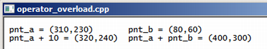

Curso completo de linguagem C++
Gameprog - Escola de programação de jogos digitais
Contato: gameprog.br@gmail.com
track11.html
11. Sobrecarregando operadores 1/2
11.1 Sobrecarregando operadores
Preste atenção no código abaixo que utilizamos no capítulo anterior sobre strings:
string snome = "gameprog";
snome = "www." + snome + ".com.br"; // resulta em www.gameprog.com.br
Essa mesma operação de concatenação feito puramente na linguagem c seria um
processo bem mais trabalhoso, você teria que usar umas duas funções strcat()
para obter o mesmo resultado. A linguagem c++ permite a redefinição de novos
significados para os operadores lógicos e matemáticos, incluindo colchetes e
parênteses. No exemplo do código acima foi dado ao operador+ a capacidade de
juntar strings e isso deixou a operação de concatenar strings suave e intuitiva.
Veja nosso exemplo com a classe Ponto que criamos:

// operator_overload.cpp
// ilustra sobrecarregamento de operadores (operator overload)
#include <iostream>
using namespace std;
// protótipo de nossas funções básicas
void inicio();
void fim();
class Ponto {
public:
int mx;
int my;
Ponto (int x =0 , int y =0): mx(x), my(y){}
void info();
Ponto operator+ (int nval);
Ponto operator+ (const Ponto &ldir);
Ponto& operator= (const Ponto &ldir);
}; // fim da classe: Ponto
void Ponto::info()
{
cout << "(" << mx << "," << my << ")\t";
}
Ponto Ponto::operator+ (int nval)
{
Ponto res;
res.mx = this->mx + nval;
res.my = this->my + nval;
return res;
} // fim do método operator+(int)
Ponto& Ponto::operator= (const Ponto &ldir)
{
mx = ldir.mx;
my = ldir.my;
return *this;
} // fim do método operator=(Ponto&)
Ponto Ponto::operator+ (const Ponto &ldir)
{
Ponto res;
res.mx = mx + ldir.mx;
res.my = my + ldir.my;
return res;
} // fim do método operator+(Ponto&)
// ponto de entrada da execução de nosso programa
int main() {
inicio();
Ponto pnt_a(310,230);
Ponto pnt_b(80,60);
Ponto pntsoma;
cout << " pnt_a = "; pnt_a.info();
cout << " pnt_b = "; pnt_b.info();
cout << "\n";
pnt_a = pnt_a + 10;
cout << " pnt_a + 10 = "; pnt_a.info();
pnt_a = pnt_a + pnt_b;
cout << " pnt_a + pnt_b = "; pnt_a.info();
fim();
} // endmain
//************* funções ******************************************************
void inicio() {
system("color f0");
system("title operator_overload.cpp");
cout << "\n";
} // endfunction: initsys()
void fim() {
cout << "\n\n"; system("pause");
} // endfunction: endsys()
11.1.1 this: O ponteiro invisível
Ponto operator+ (int nval); // protótipo do método
De maneira geral, como pode ser visto na linha acima, o processo de sobrecarregar
um operador consiste em escrever um método com o operador prefixado da palavra chave
operator utilizando os aspectos comuns a qualquer função tal como argumentos de
entrada e saída entre outras coisas que já vimos.
Esse protótipo nos diz que o método operator+() vai receber um número inteiro
e vai retornar uma cópia de um objeto Ponto. Esse objeto Ponto retornado
vai ser assinalado a uma variável Ponto através do método operator=() que deve
ser sobrecarregado quando necessário.
Ponto Ponto::operator+ (int nval)
{
Ponto res;
res.mx = this->mx + nval;
res.my = this->my + nval;
return res;
} // fim do metodo operator+(int)
Quando você chama esse método desta forma, como exemplo, pnt_a = pnt_a + 10, isso
é traduzido para a seguinte linha: pnt_a = operator+(&pnt_a, 10); Veja que o
método recebe um argumento oculto.
Cada objeto tem sua coleção particular de propriedades, entretanto o mesmo não
acontece com os métodos. Os métodos são compartilhados. Então para que o método
saiba exatamente em qual objeto operar, o método recebe uma referência do objeto
que o invocou; e assim através dessa referência, o método manipula adequadamente
as propriedades particulares do objeto em foco.
No código acima, this->mx ou mx é entendido como pnt_a.mx porque pnt_a foi o
objeto que invocou o método operator+(). Em resumo você pode usar this para se
referir ao objeto em foco.
pnt_a = pnt_a + 10
pnt_a = operator+(&pnt_a, 10);
pnt_a = operator+(&pnt_a, int nval);
Repare nas linhas acima que 10 ou int nval é o argumento do lado direito no método
e na chamada. Essa ordem é importante, pois se na chamada for invertido tal como em
pnt_a = 10 + pnt_a o programa não vai compilar porque a ordem foi invertida.
Posteriormente vamos aprender como contornar essa situação.
Ponto operator+ (const Ponto &ldir);
Esta outra versão do método operator+() vai aceitar como argumento uma referência
constante a um ponto pré-existente e assim permitir somar Pontos com Pontos.
Esse Ponto ldir do argumento foi definido como const Ponto &ldir porque
esse Ponto não deve ser modificado dentro desse método.
A definição e implementação desse método em conjunto com o método operator=() permite
o conforto de você trabalhar com Pontos dessa maneira: pnt_a = (pnt_a + pnt_b);
Essa sintaxe tem duas partes, a primeira parte avaliada primeiro é a parte dentro do
parênteses que vai produzir um Ponto res que na sequência é copiado, pelo método
operator=(), para o Ponto pnt_a.
Ponto Ponto::operator+ (const Ponto &ldir)
{
Ponto res;
res.mx = mx + ldir.mx;
res.my = my + ldir.my;
return res;
} // fim do metodo operator+(Ponto&)
Dentro de um método que redefine um operador, você tem a liberdade de estabelecer
o que esse método vai fazer. No exemplo acima, estabelecemos que no processo de
uma soma de dois pontos, deve-se somar o membro mx de cada Ponto e depois somar o
membro my de cada Ponto e retornar um Ponto com o resultado dessa soma.
Ponto& operator= (const Ponto &ldir);
Ponto& Ponto::operator= (const Ponto &ldir)
{
mx = ldir.mx;
my = ldir.my;
return *this;
} // fim do metodo operator=(Ponto&)
O método operator=() faz uma simples operação de assinalação, ou em outras palavras
uma operação de cópia simples. O método copia os membros do ponto de referência
para os respectivos membros mx,my do ponto que invocou o método.
Na omissão da implementação desse método, o compilador faz uma implementação dele
nos moldes de uma cópia simples como foi feito acima. Poderíamos tê-lo omitido
uma vez que o compilador faria automaticamente a mesma coisa para nós no contexto
acima. Entretanto, há situações que você mesmo precisa definir e implementar o
método de assinalação principalmente quando você define ponteiros e strings
dentro de sua classe.